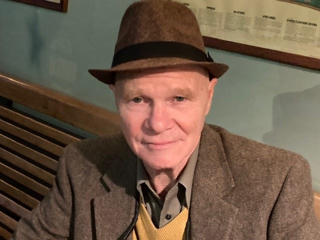

Kevin Lambert
 is the host and founder of Open Piano. He has played piano, drums and led bands on four continents, including stints with Hannibal Means and Ghanian HiLife great C.K. Mann. Gigging all over the world, he grew to hate the loud, canned music that has been an unfortunate signature of bars everywhere, and formed Open Piano as a reaction to that. He plays percussion in Malcolm X Park, and his last D.C. band was Los Caribbeat.
Kaleb Davis
is a piano, guitar and songwriting teacher for Just Rock Enterprises and a music therapy student at Howard University who cites gospel and soul among his influences. With a powerful voice and equally compelling lyrics, he sings songs that are sure to make you feel. He has performed at numerous DMV venues, including the Smithsonian Museum of African American History.
Ed Rejuney
one of the founding fathers of Open Piano, is a D.C. native who has been playing piano since he was a lad. One of those rare classically trained pianists who can improvise jazz solos with the best of them, Ed also leads the Ed Rejuney Quartet. He is perhaps the DMVs finest interpreter of the music of Richard Rodgers.
Wendy Bond
began singing in public before she learned to read, and she has performed for many years as a choral singer. After moving to D.C. from the UK in the 1980s, she joined The Thomas Circle Singers, where she continues to sing and also serves as music librarian. At Open Piano, she has been thrilled to collaborate with talented pianists to develop her repertoire as a solo vocalist. Her song choices range from Gilbert and Sullivan to Joni Mitchell, but her specialty is the work of Steven Sondheim.
Stefan Sullivan
 has performed his blend of cocktail jazz and honky tonk in over 500 gigs in the UK and the US. He was the house pianist at Freud Cafe, Oxford's (UK) hottest night club and has hosted DC shows at The Saloon, Atlas Theater, The Willard Hotel, and the Downtown Holiday Market.He has been with Open Piano since our first year at Purple Patch.His 2010 debut album, Happy Clinic/Memory Mound, a collaboration with Tiger Lillies sound designer Claus Buehler, was profiled on WNYU fm, the legendary indie radio of NYU. Spotify – Stefan Sullivan.As writer/journalist, he has authored essays on politics and pop culture, and a critically-acclaimed memoir set in Siberian oil country (Aufbau/Berlin, 2002).
has performed his blend of cocktail jazz and honky tonk in over 500 gigs in the UK and the US. He was the house pianist at Freud Cafe, Oxford's (UK) hottest night club and has hosted DC shows at The Saloon, Atlas Theater, The Willard Hotel, and the Downtown Holiday Market.He has been with Open Piano since our first year at Purple Patch.His 2010 debut album, Happy Clinic/Memory Mound, a collaboration with Tiger Lillies sound designer Claus Buehler, was profiled on WNYU fm, the legendary indie radio of NYU. Spotify – Stefan Sullivan.As writer/journalist, he has authored essays on politics and pop culture, and a critically-acclaimed memoir set in Siberian oil country (Aufbau/Berlin, 2002).
Laurie Cooper
sings old school blues, R & B and jazz standards at Open Piano. She got her start as a a percussionist with Los Caribbeat, and continues as an occasional part of More Than a Drum. “No matter who comes through, there are positive vibes and an easy flow between musical genres."
David Russell
started playing the piano at age six, but his passion for the instrument was really ignited in high school, when he first dug his teeth into Chopin’s Fantaisie-Impromptu. Having studied classical piano at Cornell University and the San Francisco Conservatory of Music, he is now a seasoned pianist with a diverse repertoire including classical music, ragtime, and showtunes. In recent years, he has expanded his interests to include composing, arranging, and vocal accompaniment.
Drew Kid
 sometimes known as French Toast Jefferson, has been studying piano for over 25 years. A Silver Spring native of Filipino-American origin, he currently teaches, composes, produces, arranges, records, scores film, and leads his own band, Klout Sitty Burd Gyang, aside from providing support to other artists. He has amassed an extensive discography of collaborations among artists nationwide and continues to conceptualize albums under his own name. Learn more at www.drewkid.com and remember that patience, gratitude, and balance are great things that activate the beauty within.
sometimes known as French Toast Jefferson, has been studying piano for over 25 years. A Silver Spring native of Filipino-American origin, he currently teaches, composes, produces, arranges, records, scores film, and leads his own band, Klout Sitty Burd Gyang, aside from providing support to other artists. He has amassed an extensive discography of collaborations among artists nationwide and continues to conceptualize albums under his own name. Learn more at www.drewkid.com and remember that patience, gratitude, and balance are great things that activate the beauty within.
Sam Post
Equally at home composing for orchestra, playing Bach at the piano, or crossing over into pop, Sam Post is forging a career across styles and between genres. The Washington Post has praised his abilities at the piano ("confident, sensitive...a pianist with drive and intelligence"), the Bay Area Reporter lauded his chamber symphony ("Post has created a breathtaking musical joy ride"), and luminaries such as Renée Fleming have commended his overall musicianship (“incredibly gifted”).
Jerry Blasenstein
A native of Yonkers, NY, and a pianist since childhood, Jerry came to Washington in 1969 for college and worked at the U.S. Department of State for 30 years. He has sung with the Capital City Voices Jazz Choir and at various open mics and jam sessions. He appeared in musical theater productions of Les Miserables and Once Upon a Mattress. His YouTube channel is https://www.youtube.com/@jerryblasenstein9223/videos